正文
第 1 章，HDRP 入门
1.1 摘要
可编辑渲染管线（Scriptable Render Pipeline, SRP）
- 高清渲染管线（High Definition Render Pipeline, HDRP）
- 通用渲染管线（Universal Render Pipeline, URP）
资源下载地址：
《枫丹白露》场景：
Visual Effect Graph（Unity 最新的 GPU 加速粒子效果制作模块）演示场景：
- [Made with Unity]-The Heretic 异教徒完整中文版_哔哩哔哩_bilibili
- [Made with Unity]-Unity实时渲染动画《Windup》完整版震撼发布！_哔哩哔哩_bilibili
1.2 离线渲染和实时渲染
传统 DCC（Digital Content Creation，数字资产制作） 工具：Maya、3ds Max、C4D、Blender……
| 属性 | 离线渲染 | 实时渲染 |
|---|---|---|
| 渲染质量 | 好 | 差 |
| 渲染速度 | 慢 | 快 |
1.2.1 建模功能（ProBuilder、ProGrid 和 PolyBrush 套件）
让 Unity 具有像传统 DCC 工具一样的建模能力。
1.2.2 Timeline（非线编工具）
就是时间轴。
1.2.3 Cinemachine（智能摄像机系统）
控制摄像机逻辑。
1.2.4 HD Post Processing Effect（HDRP 专用后期特效模块）
景深、动态模糊、高级抗锯齿、晕光等，无需等待传统流程中漫长的渲染过程。
1.2.5 可编程着色器编程工具 Shader Graph
- [Unity-Shader Graph | Zi-Zi's Journey](/2023/10/23/Unity-Shader Graph/)
1.2.6 高级特效开发工具 Visual Effect Graph
可视化节点式特效编辑器，模拟粒子特效。
1.2.7 视频和动画输出工具 Unity Recorder
将场景以图片或动画的形式输出。
1.2.8 HDRP 针对不同材质的模拟
- 支持皮肤 Subsurface Scattering（SSS）、毛发和布料的模拟。
- 支持创建逼真的玻璃反射和折射效果。
- 支持创造模拟真实汽车清漆效果的 Clear Coat。
- 不仅可以模拟写实效果的材质，也可以实现风格化渲染，比如卡通渲染。
1.3 在 DCC 软件中准备模型资产
1.3.1 在 DCC 软件中使用的尺寸单位要与 Unity 统一
Unity 里的单位是米，Maya 里是厘米，3ds Max 里是英尺。
1.3.2 只在需要的地方使用三角面
确保性能。
1.3.3 纹理制作
- 制作纹理时，贴图的长和宽应为 2 的次方。Unity 处理长和宽为 2 的次方的纹理更高效。
- 可以考虑使用 Substance Designer 和 Substance Painer 来制作纹理，这两个工具有完全支持 HDRP 工作流的相关插件。
1.3.4 支持 FBX、USD 和Alembic 格式的资产导入
1.3.5 Unity Reflect 支持导入 Autodesk Revit 资产
从第三方软件直接导入素材。
1.4 Unity HDRP 项目设置
1.4.1 创建一个基于高清渲染管线（HDRP）的 Unity 项目
{kind=link}
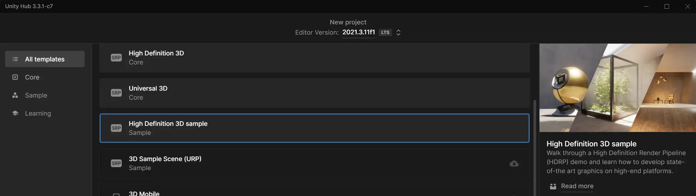
整一个 HDRP 的范例工程！
1.4.2 通过示例项目了解 HDRP 相关的概念和模块
{kind=link}
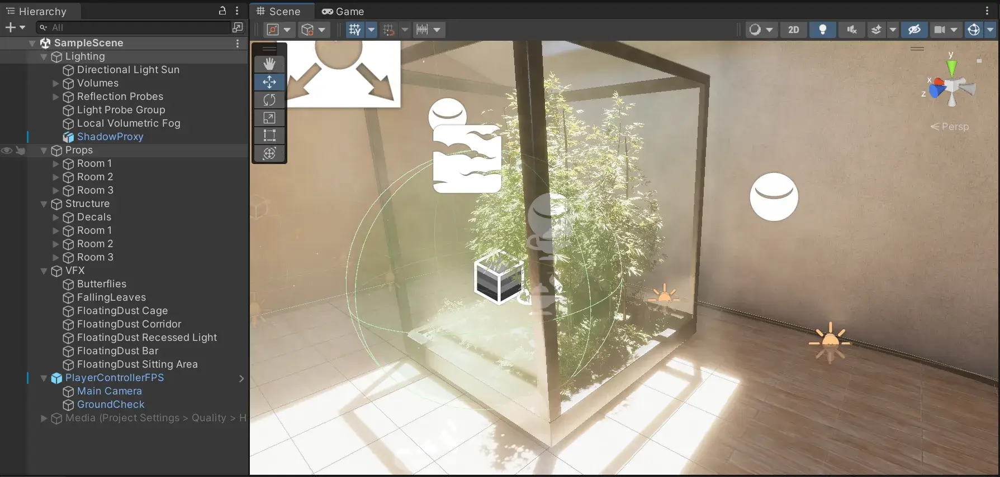
一个 HDRP 的范例场景，包括：
-
Lighting
光照
-
Directional Light Sun
平行光，用于模拟太阳光。
-
Volumes
雾效
-
Reflection Probes
反射探针，通过对自身周围的场景进行采样，为场景提供反射信息。
-
Light Probe Group
环境光探针，为场景提供间接光照信息。
-
Local Volumetric Fog
局部体积雾
-
ShadowProxy
处理阴影
-
-
Props
道具模型
-
Structure
房间架构
-
VFX
粒子特效
-
PlayerControllerFPS
第一人称的玩家预制体，包含一个主相机。
Volumes 雾效
{% div subfields %}
{% div subfield %}
{kind=link}
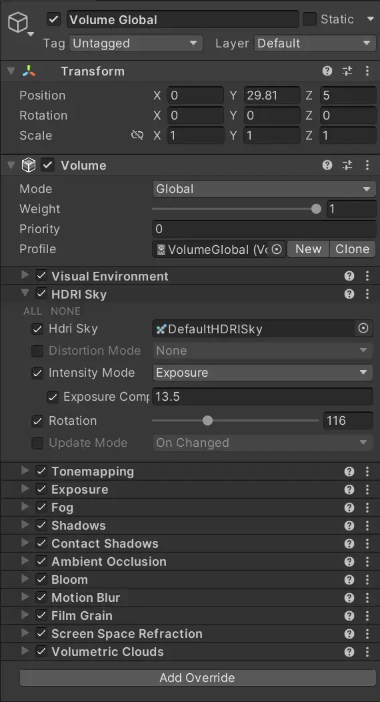
设为 Global 模式的 Volume，其效果默认会影响整个场景。
{% enddiv %}
{% div subfield %}
{kind=link}
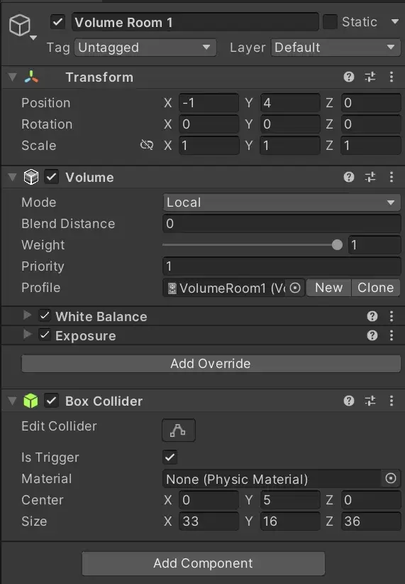
设为 Local 模式的 Volume，其效果影响范围由 Collider 决定。
{% enddiv %}
{% enddiv %}
Volume 框架将组件和设置分离，组件上的所有设置（添加的效果）由关联的 Profile 决定。
光照贴图烘培
{kind=link}
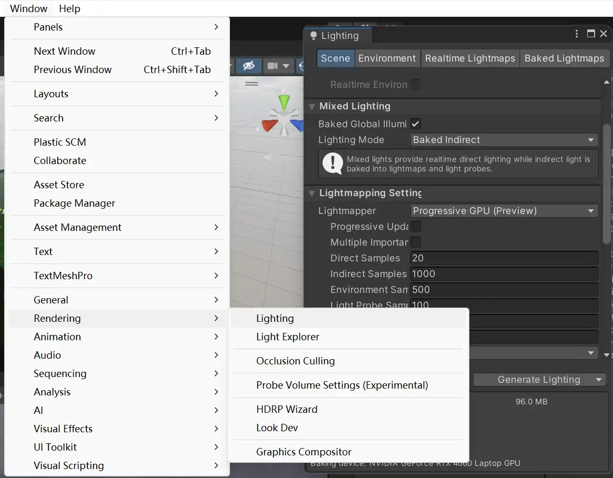
Window-Rendering-Lignting 打开光照烘培的窗口，Generate Lighting 即可进行光照烘培。
未完成光照烘培的场景，只有直接光照。完成光照烘培的场景，具备直接和间接光照，也添加了 HDRI Sky 环境光照信息。
HDRP 配置文件（HDRP Asset）
{kind=link}
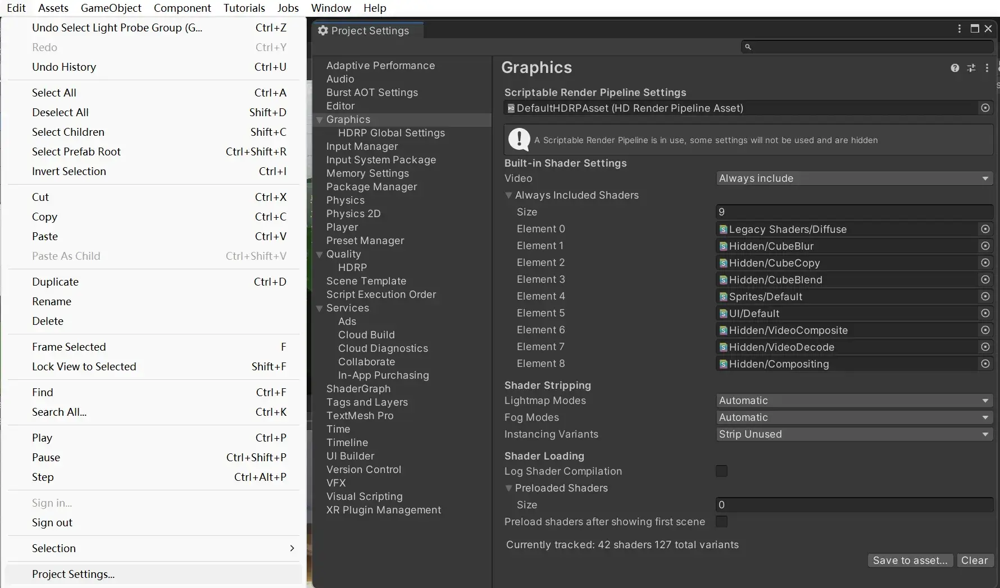
Edit-Project Settigs...-Graphics-Scriptable Render Pipeline Settings 中可以找到 HDRP 的配置文件。这说明 HDRP 是基于 SRP 实现的。
点击 HDRP 的设置信息：
- Rendering（渲染）
- Lighting（光照）
- Lighting Quality Settings（光照质量设置）
- Material（材质）
- Post-processing（后处理）
- Post-processing Quality Settings（后处理质量设置）
- XR（XR 相关设置）
介绍几个重要的：
{kind=link}
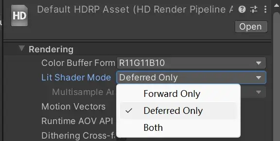
-
Lit Shader Mode
- Forward Only 可以提供更多的高级材质，但是相应的性能消耗较大
- Deferred Only
- Both
{kind=link}
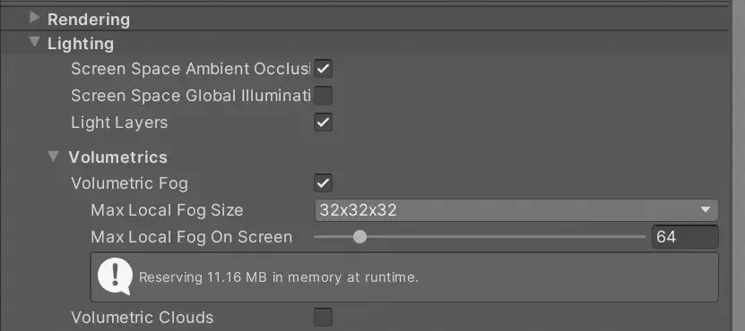
只有配置文件中的 Volumetric Fog 打开，Volume组件的体积雾特效才会生效。
HDRP 材质和着色器
{kind=link}
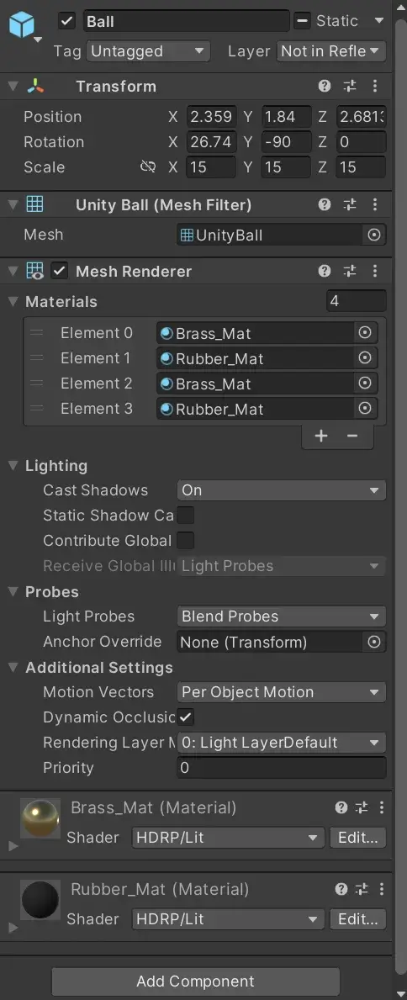
渲染一个模型，需要将 Mesh、Material、Shader 和 Texture 组合在一起。
- Mesh 用于表现模型形状，一个 Mesh 可以有多个 Material。
- Material 用于控制模型不同部分的材质表现。
- 每种 Material 都与一个指定的 Shader 相关联。Shader 是一段代码，包含了用于计算屏幕上每个像素点颜色的具体算法。Shader 进行计算的时候会考虑当前场景的光照信息以及在 Material 上提供的具体配置信息。
{kind=link}
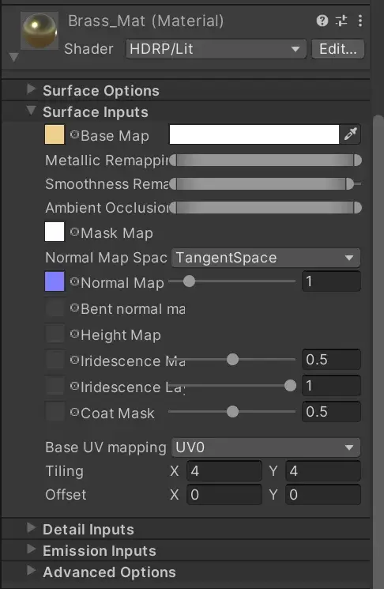
Lit Shader 是 HDRP 常用的 Shader 之一，在 Surface Inputs 的参数集合中可以指定各种 Map，这些 Map 所关联的就是 Texture。
- Base Map：用于为模型提供 Albedo 颜色信息。
- Mask Map：使用一张将信息存储到 RGBA 四个通道中的纹理，来一并控制：
- Metallic（金属反光-Red 通道）
- Ambient Occlusion（环境光遮蔽-Green 通道）
- Detail Mask（细节遮罩-Blue 通道）
- Smoothness（光滑度-Alpha 通道）
- Normal Map：法线贴图。为模型表面添加更多模型上不存在的细节。
{kind=link}
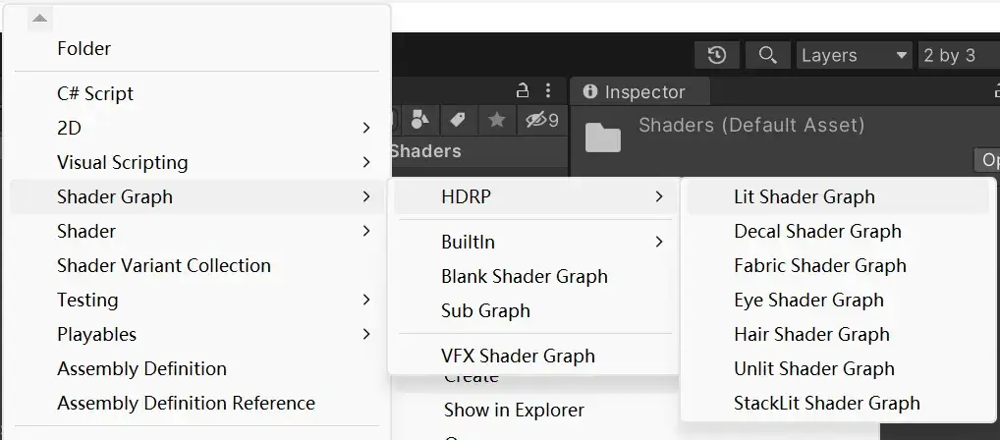
如此可以创建一个 HDRP 的 Lit Shader Graph。
{kind=link}
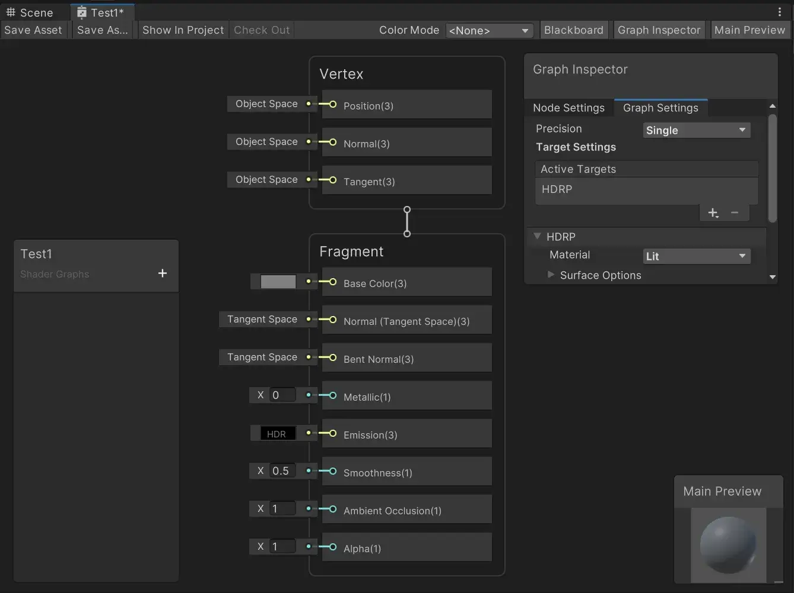
就可以用可视化的方式编辑 Shader。
{kind=link}
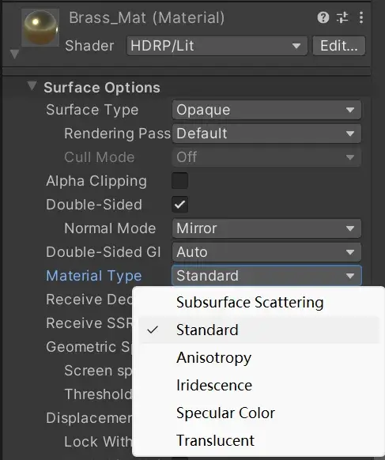
Surface Options 下的 Material Type 有 6 种材质类型可选择：
-
Subsurface Scattering
次表面散射：模拟皮肤、树叶、蜡烛、玉器及瓷器釉面等。
-
Standard
标准：用于表现大部分材质，此工作流把物体分为金属和非金属两类。
-
Anisotropy
各向异性：模拟拉丝金属表面或者天鹅绒。不同的角度观察，会出现不同的高光现象。
-
Iridescence
彩虹色：当观察角度或者光照角度发生变化时，物体表面的颜色会发生渐变（渐变色）。这非常适合用于模拟肥皂泡、彩虹色金属表面和昆虫的翅膀等。
-
Specular Color
高光颜色：可用于表现大部分材质，属于 PBR 材质流程制作流程中的 Specular Workflow（Metallic 与 Specular 工作流程的比较 - Unity 手册）
-
Translucent
半透明：半透明材质可以和一张 Thickness Map 配合使用，用于模拟半透明物体。
{kind=link}
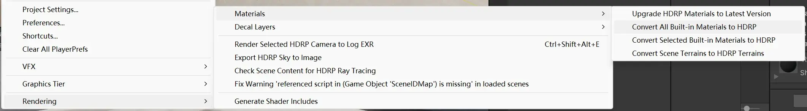
Edit-Rendering-Materials-Covert All Built-in Materials to HDRP，可以将材质升级成 HDRP 材质！虽然一般都需要升级完成后在手动微调。
HD Render Pipeline Wizard（HDRP 设置窗口）
{kind=link}
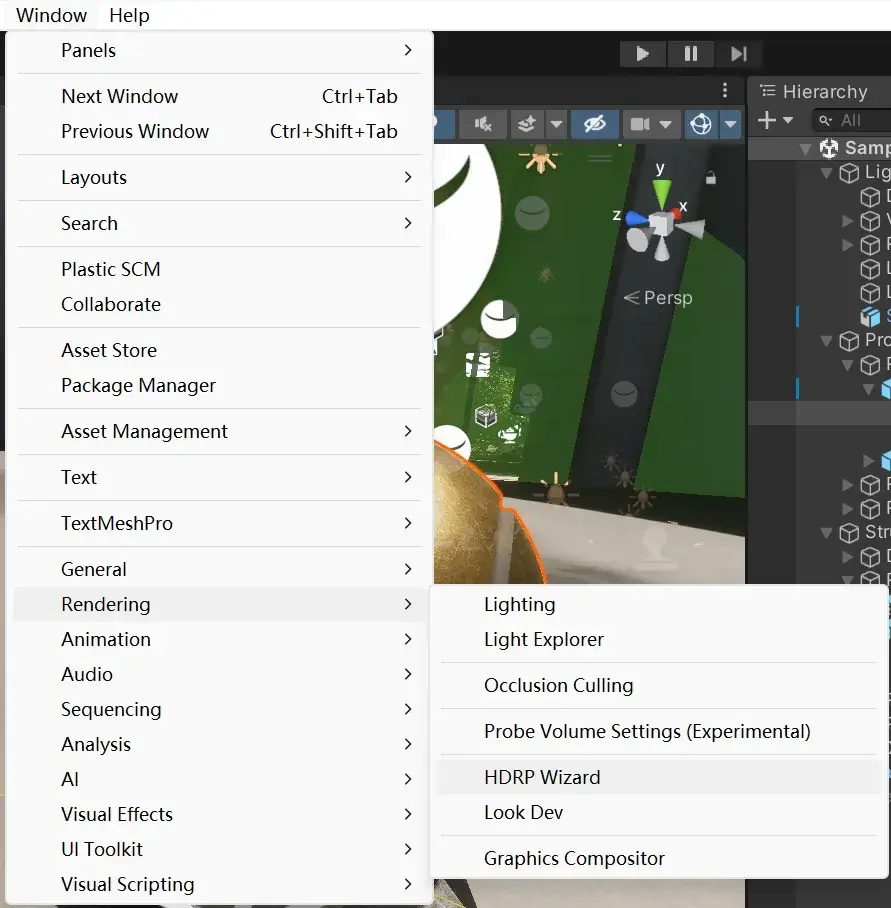
Window-Rendering-HDRP Wizard 中检查 HDRP 的配置。
{kind=link}
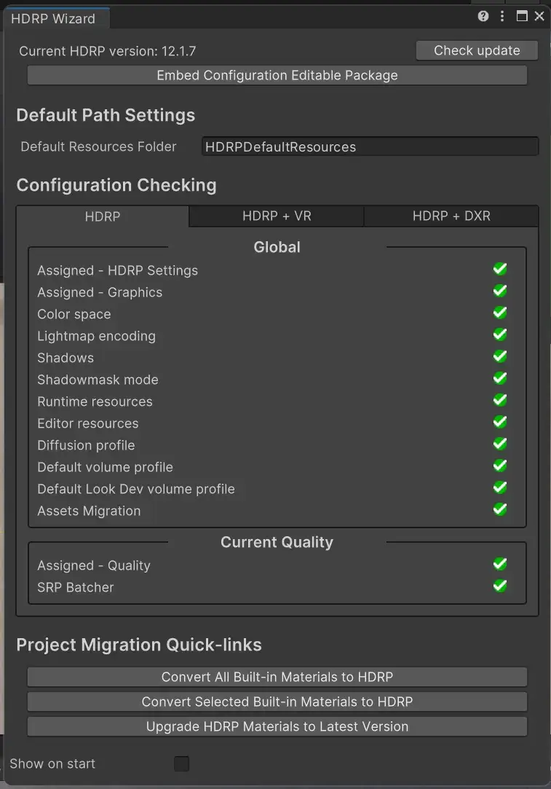
都是✔，则 HDRP 配置正确。
Render Pipeline Debug（HDRP Debug 窗口）
{kind=link}
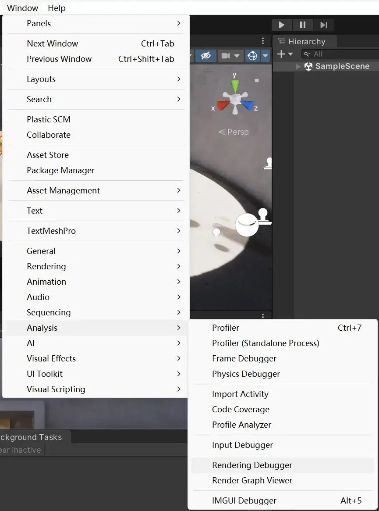
Window-Analysis-Rendering Debugger，调出渲染的调试窗口。
{% div subfields %}
{% div subfield %}
{kind=link}
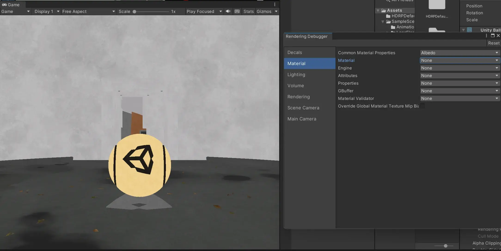
只显示漫反射贴图。
{% enddiv %}
{% div subfield %}
{kind=link}
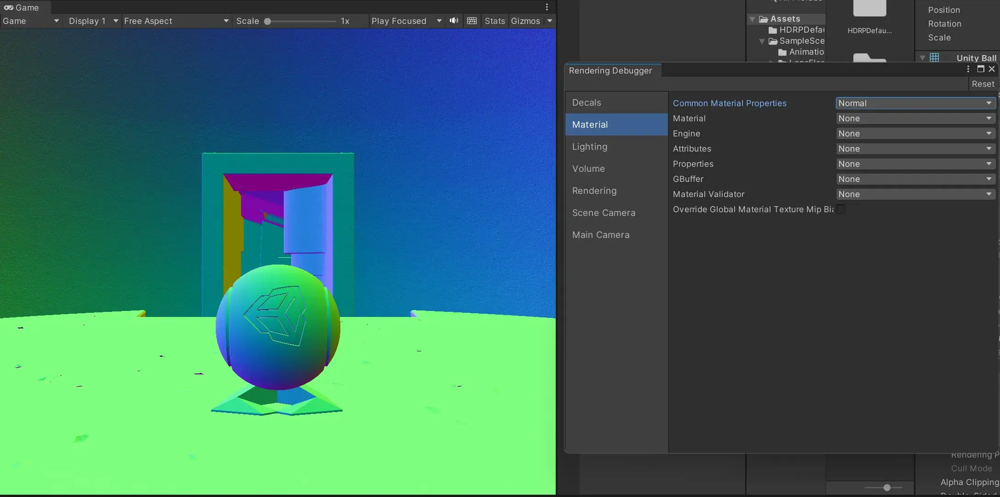
只显示法线贴图。
{% enddiv %}
{% div subfield %}
{kind=link}
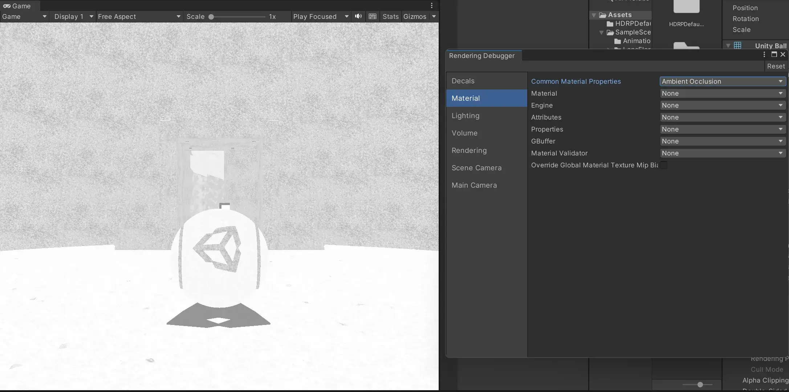
只显示环境光屏蔽贴图。
{% enddiv %}
{% enddiv %}
- HDRI Pack | 2D 天空 | Unity Asset Store 这个集合中包含 7 个 8192 x 4096 的 HDR 图片。加载它！
{kind=link}
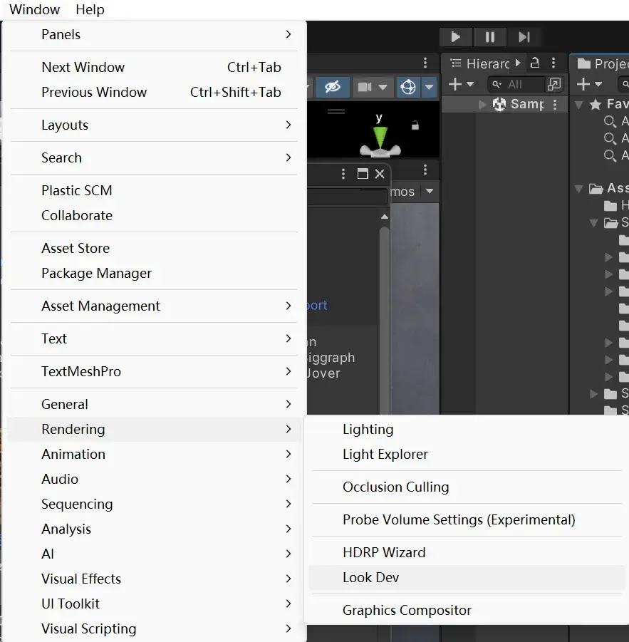
Window-Rendering-Look Dev，调出可以单独显示环境和预制体的面板。
{kind=link}
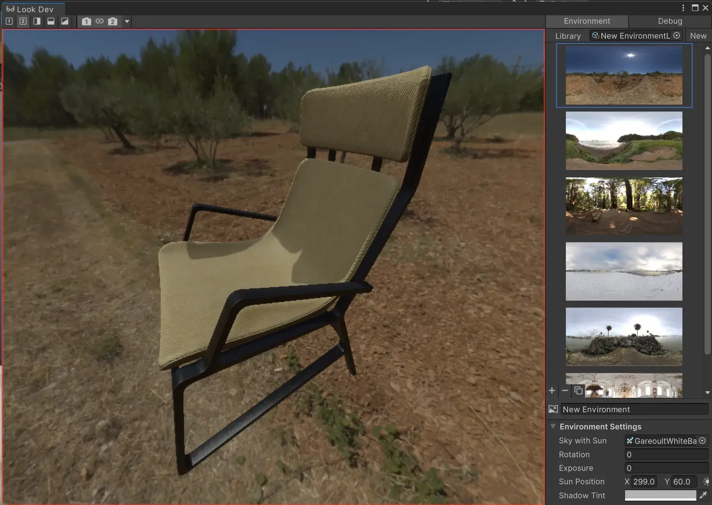
右侧面板 Environment 中 New 一个 Library，在面板左下角里添加场景，将天空盒拖入场景中，再将场景拖到视图上。
最后将预制体拖入视图，即可观察预制体在视图中的渲染效果。但是好像不太听话，容易黑屏……